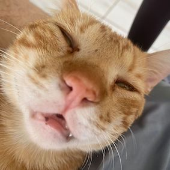
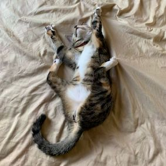
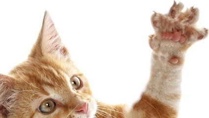
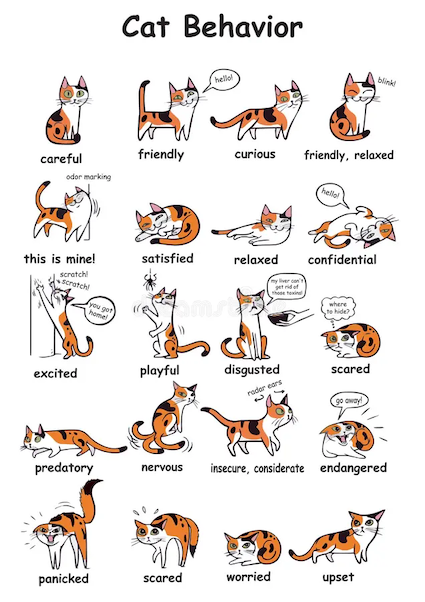
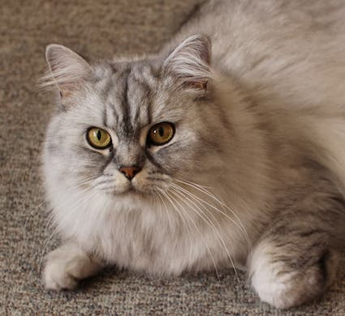
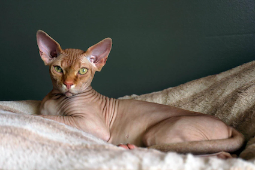
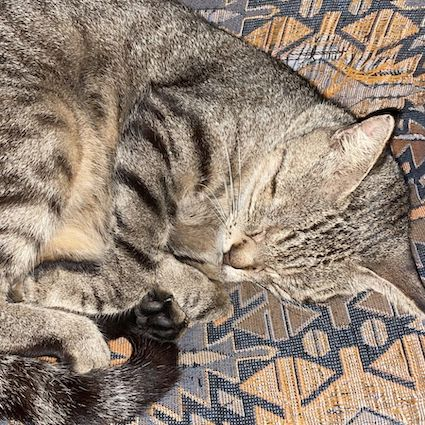

Characteristics
Size
The domestic cat has a smaller skull and shorter bones than the European wildcat. It averages about 46 cm (18 in) in head-to-body length and 23–25 cm (9–10 in) in height, with about 30 cm (12 in) long tails. Males are larger than females. Adult domestic cats typically weigh between 4 and 5 kg (9 and 11 lb)
 Claws
Cats have protractible and retractable claws. In their normal, relaxed position, the claws are sheathed with the skin and fur around the paw's toe pads. This keeps the claws sharp by preventing wear from contact with the ground and allows for the silent stalking of prey. The claws on the forefeet are typically sharper than those on the hindfeet. Cats can voluntarily extend their claws on one or more paws. They may extend their claws in hunting or self-defense, climbing, kneading, or for extra traction on soft surfaces. Cats shed the outside layer of their claw sheaths when scratching rough surfaces. Most cats have five claws on their front paws and four on their rear paws. The dewclaw is proximal to the other claws. More proximally is a protrusion which appears to be a sixth "finger". This special feature of the front paws on the inside of the wrists has no function in normal walking but is thought to be an antiskidding device used while jumping. Some cat breeds are prone to having extra digits ("polydactyly"). Polydactylous cats occur along North America's northeast coast and in Great Britain.
Balance
Most breeds of cat are notably fond of sitting in high places, or perching. A higher place may serve as a concealed site from which to hunt; domestic cats strike prey by pouncing from a perch such as a tree branch. Another possible explanation is that height gives the cat a better observation point, allowing it to survey its territory. A cat falling from heights of up to 3 meters (9.8 ft) can right itself and land on its paws.
Cat balancing on a beam
Behavior
Outdoor cats are active both day and night, although they tend to be slightly more active at night. Domestic cats spend the majority of their time in the vicinity of their homes but can range many hundreds of meters from this central point. They establish territories that vary considerably in size, in one study ranging from 7 to 28 hectares (17–69 acres). The timing of cats' activity is quite flexible and varied but being low-light predators, they are generally crepuscular, which means they tend to be more active in the morning and evening. However, house cats' behaviour is also influenced by human activity and they may adapt to their owners' sleeping patterns to some extent. Cats conserve energy by sleeping more than most animals, especially as they grow older. The daily duration of sleep varies, usually between 12 and 16 hours, with 13 and 14 being the average. Some cats can sleep as much as 20 hours. The term "cat nap" for a short rest refers to the cat's tendency to fall asleep (lightly) for a brief period. While asleep, cats experience short periods of rapid eye movement sleep often accompanied by muscle twitches, which suggests they are dreaming.
Persian cats
The Persian cat is a long-haired breed with a distinctive flat face and large eyes. This breed gets their name from Persia — now, modern Iran — where they most likely originated. Because they're an ancient breed that dates back to 1684 BC, their history isn’t certain. Over time, the Persian cat has become a great family pet due to their sweet, friendly, and patient nature.
Physical characteristics
Persian cats are a medium-sized breed, but they appear larger than they are due to their large amount of fur. The Persian cat size depends on its gender, with males being larger than females. Both males and females have a broad, short appearance. You can easily identify Persian cats by their large eyes, round face, and short muzzle. Some describe their face as “pansy-like”. Persian cat characteristics include long, soft fur. Their coats come in almost all colors and patterns. This includes solid colors, parti-colors, and tortoiseshell coats. They also have a wide range of eye colors that usually depend on the color of their coat. For example, blue eyes usually accompany Himalayan coats
Persian cat eating watermelon
Sphynx cats
The Sphynx cat (pronounced SFINGKS) also known as the Canadian Sphynx, is a breed of cat known for its lack of fur. Hairlessness in cats is a naturally occurring genetic mutation, and the Sphynx was developed through selective breeding of these animals, starting in the 1960s.
Physical characteristics
According to breed standards, the skin should have the texture of chamois leather, as it has fine hairs, or the cat may be completely hairless. Whiskers may be present, either whole or broken, or may be totally absent. The cats have a narrow, long head and webbed feet. Their skin is the color that their fur would be, and all the usual cat markings (solid, point, van, tabby, tortie, etc.) may be found on the Sphynx cat's skin. Because they have no fur, Sphynx cats lose body heat more readily than coated cats, making them both warm to the touch and prone to seeking out warm places.
A Sphynx kitten with its mother
Tabby cats
A tabby cat, or simply tabby, is any domestic cat (Felis catus) with a distinctive 'M'-shaped marking on its forehead; stripes by its eyes and across its cheeks, along its back, and around its legs and tail; and (differing by tabby type), characteristic striped, dotted, lined, flecked, banded, or swirled patterns on the body—neck, shoulders, sides, flanks, chest, and abdomen. "Tabby" is not a breed of cat, but a coat type seen in almost all genetic lines of domestic cats, regardless of breed.
Physical characteristics
The tabby pattern is found in many official cat breeds and is a hallmark of the landrace extremely common among the general population of cats around the world. The tabby pattern occurs naturally and is connected both to the coat of the domestic cat's direct ancestor and to those of their close relatives: the African wildcat (Felis lybica lybica), the European wildcat (Felis silvestris) and the Asiatic wildcat (Felis lybica ornata), all of which have similar coats, both by pattern and coloration. One genetic study of domestic cats found at least five founders.
Here's a funny Tabby cat video
Fun Fact
A cat was the Mayor of an Alaskan town for 20 years: An orange tabby cat called Stubbs was the mayor of Talkeetna, a small town in Alaska for 20 years! He had several uncontested elections and although he didn’t hold any legislative power, he was loved by locals and tourists alike.